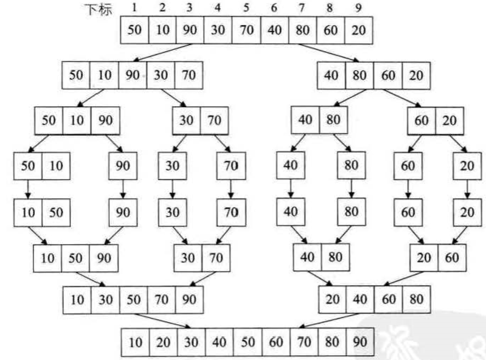
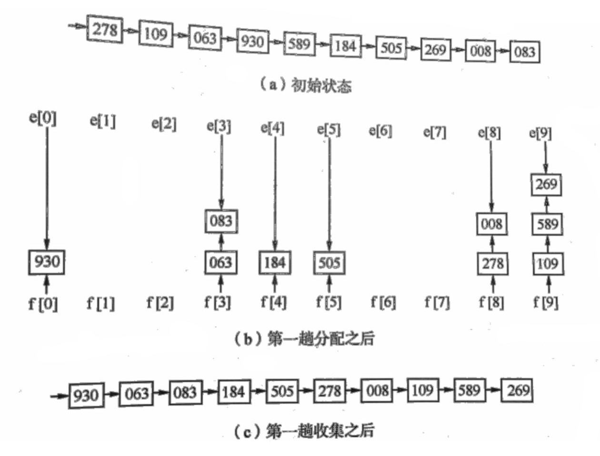
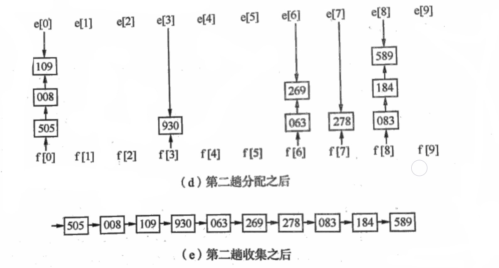
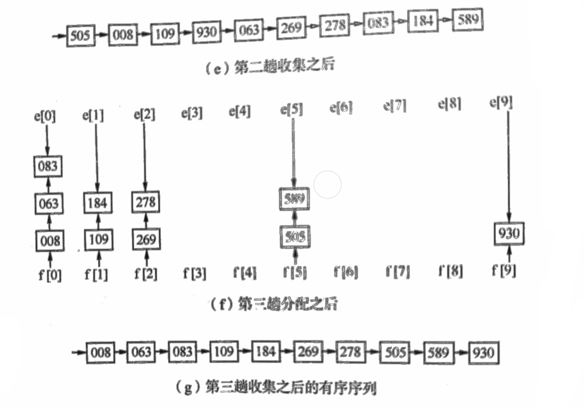

排序的基本概念 链接到标题
排序的定义 链接到标题
排序是按关键字的非递减或非递增顺序对一组记录重新进行排列的操作。
假设含 n 个记录的序列为{}，其相应的关键字分别为{}，需确定 1,2,…,n 的一种排列，使其相应的关键字满足(非递减或非递增)关系，即使得序列成为一个按关键字有序的序列，这样的操作称为排序。
排序的稳定性 链接到标题
假设，且在排序前的序列中$r_i$领先于$r_j$(即 i<j)。如果排序后$r_i$仍领先于$r_j$，则称所用的排序方法是稳定的;反之，若可能使得排序后的序列中$r_j$领先$r_i$，则称所用的排序方法是不稳定的。
内部排序与外部排序 链接到标题
根据在排序过程中待排序的记录是否全部被放置在内存中，排序分为内排序、外排序。
内排序是在排序整个过程中，待排序的所有记录全部被放置在内存中。
外排序是由于排序的记录个数太多，不能同时放置在内存，整个排序过程需要在内外存之间多次交换数据才能进行。
内部排序方法分类 链接到标题
根据逐步扩大记录有序序列长度的原则不同，可以将内部排序分为以下几类。
- 插入类，直接插入排序、折半插入排序、希尔排序
- 交换类，冒泡排序、快速排序
- 选择类，简单选择排序、树形选择排序、堆排序
- 归并类，2-路归并排序
- 分配类，基数排序
插入排序 链接到标题
插入排序的基本思想是: 每一趟将一个待排序的记录，按其关键字的大小插入到已经排好序的一组记录的适当位置上，直到所有待排序记录全部插入为止。
直接插入排序 链接到标题
直接插入排序是将一条记录插入到已经排好序的有序表中，从而得到一个新的、记录数量增 1 的有序表。
算法步骤 链接到标题
- 设待排序的记录存放在数组 r[1..n]中，r[1]是一个有序序列。
- 循环 n-1 次，每次使用顺序查找法，查找 ri 在已经排好序的序列 r[1…i-1]中的插入位置，然后将 r[i]插入表长为 i-1 的有序序列 r[1…i-1]，直到将 r[n]插入表长为 n-1 的有序序列 r[1…n-1]，最后得到一个表长为 n 的有序序列。
算法描述 链接到标题
为了在查找插入位置的过程中避免数组下标出界，r[0]设置监视哨。
void InsertSort(){
for(i=2;i<=L.length;++i){
if(L.r[i].key < L.r[i-1].key){
L.r[0]=L.r[i];
L.r[i]=L.r[i-1];
for(j=i-2;L.r[0].key < L.r[j].key;--j){
L.r[j+1] = L.r[j];
}
L.r[j+1] = L.r[0];
}
}
}
折半插入排序 链接到标题
直接插入排序采用顺序查找法查找当前记录在已排好序的序列中的插入位置，而查找插入位置的过程可以使用折半查找来实现，由此进行的插入排序称之为折半插入排序。
算法步骤 链接到标题
- 设待排序的记录存放在数组 r 中
- 循环 n-1 次，每次使用折半查找法，寻找插入位置，然后插入该元素，最后得到一个表长为 n 的有序序列。
算法描述 链接到标题
void BInsertSort(SqList &L){
for(i = 2; i<= L.length; ++i ){
L.r[0] = L.r[i]; //将待插入的数据存放入监视哨中
// 设置查找区间
low = 1;
high = i-1;
// 折半查找插入位置
while(low <= high){
m = (low+high)/2;
if(L.r[0].key < L.r[m].key ){
high = m-1;
}else{
low = m+1;
}
}
for(j = i-1;j>=high + 1; --j){ //记录后移
L.r[j+1] = L.r[j];
}
L.r[high+1]=L.r[0]; //进行插入
}
}
算法分析 链接到标题
时间复杂度 链接到标题
折半查找比顺序查找快，因此折半插入排序优于直接插入排序，在平均情况下，折半插入排序仅减少了比较次数，而记录的移动次数不变，算法时间复杂度仍为$O(n^2)$.
空间复杂度 链接到标题
折半插入排序所需附加存储空间与直接插入排序相同，空间复杂度为 O(1).
算法特点 链接到标题
- 稳定排序，只能用于顺序结构，不能用于链式结构
- 适合初始记录无序、n 较大的情况。
希尔排序 链接到标题
希尔排序又称为缩小增量排序，直接插入排序，当待排序的记录个数较少且待排序序列的关键字基本有序时，效率较高。希尔排序基于以上两点，从减少记录个数和序列基本有序两个方面对直接插入排序进行了改进。
算法步骤 链接到标题
希尔排序实质上是采用分组插入的方法，先将整个待排序记录序列分割成几组，从而减少参与直接插入排序的数据量，对每组分别进行直接插入排序，然后增加每组的数据量，重新分组。这样当经过几次分组排序后，整个序列中的记录基本有序时，再对全体记录进行一次直接插入排序。
- 第一趟取增量 d1(d1<n)把全部记录分成 d1 个组，所有间隔为 d1 的记录分在同一组，在各组中进行直接插入排序。
- 第二趟取增量 d2(d2<d1)，重复上述的分组和排序。
- 依此类推，直到所取的增量 dt=1(dt<dt−1<…<d2<d1)，所有记录在同一组中进行直接插入排序为止。
算法举例 链接到标题
假设给定序列为{8,9,1,7,2,3,5,4,6,0}
初始增量为 5，整个数组分成了 5 组，分别为{8,3}，{9,5}，{1,4}，{7,6}，{2,0}。
对这 5 组分别使用插入排序，结果可以发现，这五组中的相对小元素都被调到了前面.
缩小增量为 2，整个数组分成了 2 组，分别为{3,1,0,9,7}，{5,6,8,4,2}。
对这 2 组分别使用插入排序，此时整个数组的有序性是很明显的。
再缩小增量为 1，整个数组分成了 1 组，{0,2,1,4,3,5,7,6,9,0}
只需要对以上数列进行简单的微调，不需要大量的移动操作即可完成整个数组的排序
算法描述 链接到标题
void ShellInsert(SqList &L,int dk){
for(i = dk+1;i<=L.length;++i){
if(L.r[i].key < L.r[i-dk].key){
L.r[0] = L.r[i];
}
// 记录后移
for(j = i - dk; j>0 && L.r[0].key < L.r[j].key; j -=dk;){
L.r[j+dk] = L.r[j];
}
L.r[j+dk] = L.r[0];
}
}
void ShellSort(SqList &L,int dt[],int t){
for(k = 0; k < t; ++k){
ShellInsert(L,dt[k]); //一趟增量为dt[t]的希尔插入排序
}
}
算法分析 链接到标题
时间复杂度 链接到标题
增量大于 1 时，关键字较小记录不是一步一步移动，而是跳跃式移动，使得在进行最后一趟增量为 1 的排序时，序列已基本有序，因此希尔排序的时间复杂度较直接插入排序低。希尔排序的时间复杂度取决于其增量序列，因此求希尔排序的时间复杂度是一个复杂的问题。
有人指出，当增量序列为$dt[k]^{2t−k+1}−1$时，希尔排序的时间复杂度为$O(n^{3/2})$,其中 t 为排序趟数, $1≥k≥t≥[log_2(n+1)]$
空间复杂度 链接到标题
希尔排序的空间复杂度也为 O(1).
算法特点 链接到标题
- 记录跳跃式地移动导致排序方法是不稳定地
- 只能用于顺序结构
- 增量序列取法不同，但应该使增量序列中的值没有除 1 之外的公因子，并且最后一个增量值必须为 1
- 记录总的比较次数和移动次数都比直接插入排序少，n 越大，效果越明显，适合于初始记录无序，n 较大的情况。
交换排序 链接到标题
交换排序的基本思想: 两两比较待排序记录的关键字，一旦发现两个记录不满足次序要求时则进行交换，直到整个序列全部满足要求为止。
冒泡排序 链接到标题
冒泡排序是一种最简单的交换排序方法，它通过两两比较相邻记录的关键字，如果发生逆序，则进行交换，从而使关键字小的记录如气泡一样逐渐向上漂浮或者坠落。
算法步骤 链接到标题
- 设待排序的记录存放在数组 r 中，将第一个记录与第二个记录的关键字进行比较，如果逆序，则交换，然后比较第二个记录与第三个记录的关键字，直到最后一次交换，第一趟比较完成。
- 然后进行第二次排序，对前 n-1 个记录进行同样的操作，其结果是使关键字次大的记录被安置到第 n-1 个记录的位置上。
- 重复上述操作，直至某一趟排序过程中没有进行交换记录的操作，说明排序完成。
算法代码示例 链接到标题
#define MAXSIZE 10
typedef struct Key {
int key;
}Key;
typedef struct SqList {
Key *r;
int length;
}SqList;
void CreateArray(SqList &L) {
L.r = (Key*)malloc(sizeof(Key)*MAXSIZE);
L.length = 0;
for (int i = 0; i < 10; i++) {
L.r[i].key = i;
L.length++;
}
}
void Print(SqList L) {
int i = 0;
while (i++ < L.length - 1) {
cout << L.r[i].key;
}
cout << endl;
}
void BubbleSort(SqList &L) {
int m = L.length-1;
int flag = 1; //标志某趟是否完成交换。
Key t;
while ((m > 0) && (flag == 1)) { //如果某趟没有进行交换，说明已排序完成
flag = 0;
for (int j = 1; j <= m; j++) {
if (L.r[j].key < L.r[j + 1].key) {
flag = 1;
//交换
t = L.r[j];
L.r[j] = L.r[j + 1];
L.r[j + 1] = t;
}
}--m;
}
}
int main() {
SqList L;
CreateArray(L);
Print(L);
BubbleSort(L);
Print(L);
getchar();
return 0;
}
算法分析 链接到标题
时间复杂度 链接到标题
最好情况(初始序列为正序)，只需要进行一趟排序，只进行 n-1 次关键字比较，且不移动记录。
最坏情况(初始序列为逆序)，需进行 n-1 趟排序，总的关键字比较次数 KCN 和记录移动次数 RMN 分别为:
- 完全图(KCN)的边数：
$$ KCN = \sum_{i=n}^2(i-1) = \frac{n(n-1)}{2} \approx \frac{n^2}{2} $$
- 正则图(RMN)的边数：
$$ RMN = 3\sum_{i=n}^2(i-1) = \frac{3n(n-1)}{2} \approx \frac{3n^2}{2} $$
在平均情况下，冒泡排序比较次数与记录移动次数分别为$n^2/4$和 $3n^2/4$，时间复杂度为$O(n^2)$
空间复杂度 链接到标题
交换时需要一个临时存储变量，所以空间复杂度为 O(1)。
算法特点 链接到标题
- 稳定排序
- 可用于链式存储结构
- 移动次数较多，算法平均时间性能比直接插入排序差，当初始无序，n 较大时不建议使用。
快速排序 链接到标题
在冒泡排序中，只对相邻的两个记录进行比较，因此每次交换两个相邻记录时只能消除一个逆序，如果能通过两个不相邻记录的一次交换，消除多个逆序，则会加快排序的速度，因此有了快速排序的算法。
算法步骤 链接到标题
在待排序的 n 个记录中任取一个记录(通常取第一个记录)作为枢轴，设其关键字为 pivotkey，经过一次排序后，把所有关键字小于 pivotkey 的记录交换到前面，所有大于 pivotkey 的记录交换到后面，然后将待排序记录分成两个子表，枢轴放置其分界处，重复上述过程，直到每个子表只有一个记录时，排序完成。
- 选择待排序表中的第一个记录作为枢轴，将其暂存在 r[0]中，附设两个指针 low 和 high，分别指向表的下界和上界。
- 从表的最右侧位置依次向左搜索，找到第一个关键字小于枢轴关键字 pivotkey 的记录，将其移到 low 处。
- 再从表的最左侧位置，依次向右搜索找到第一个关键字大于 pivotkey 的记录和枢轴记录交换。
- 重复步骤二和三，直到 low 与 high 相等为止，此时 low 与 high 的位置即为枢轴在此趟排序中的最终位置，原表被分成两个子表。
算法描述 链接到标题
//ADT示例
int Partition(SqList &L,int low,int high){
L.r[0] = L.r[low]; //子表的第一个记录作为枢轴
pivotkey = L.r[low].key; //存放枢轴的key
while(low < high){
while(low < high && L.r[high].key >= pivotkey) --high;
L.r[low] = L.r[high]; //从右向左找第一个比枢轴小的值
while(low < high && L.r[low].key <= pivotkey) ++low;
L.r[high] = L.r[low]; //从左向右找第一个比枢轴大的值
}
L.r[low]=L.r[0];
return low;
}
void QSort(SqList &L,int low,int high){
if(low < high){
pivotloc = Partition(L,low,high); //枢轴位置
QSort(L,low,pivotloc-1); //对左子表递归排序
QSort(L,pivotloc+1,high); //对右子表递归排序
}
}
void QuickSort(SqList &L){
QSort(L,1,L.length);
}
//简易代码
void Quickly_sort(int num[], int start, int end) {
int le = start, ri = end, pivot; //使左下标从首元素开始向前滚动，右下标从末尾元素开始向后滚动
int temp;
pivot = num[(start + end) / 2]; //pivot为数组的中间值（最小下标+最大下标处以2）
while (le <= ri) {
while (num[le] < pivot) le++; //从左向右，找大于中心点的值
while (num[ri] > pivot) ri--; //从右向左，找小于中心点的值
if (le <= ri) {
temp = num[le];
num[le] = num[ri];
num[ri] = temp;
le++; ri--; //互换后，左下标与右下标，向前滚动一个位置 （如果交换后不进行滚动，此时while条件永远不成立，if条件始终成立，程序无限循环进行交换）
}
}
if (start != le)
Quickly_sort(num, start, ri);
if (ri != end)
Quickly_sort(num, le, end);
}
int main(){
int num[] = { 78, 56, 89, 43, 24, 69, 42, 120, 324, 75 };
int length = (sizeof(num) / sizeof(num[0])); //获取数组长度（数组所占内存大小除以数组元素所占字节）
Quickly_sort(num, 0, length - 1); //传入数组首地址,首元素的下标,末尾元素的下标
for (int i = 0; i < length; i++)
printf("%d\t", num[i]);
getchar();
return 0;
}
算法分析 链接到标题
时间复杂度 链接到标题
快速排序的时间复杂度取决于递归树的深度，最好情况下每次将记录均匀分割成两个长度大致相等的子表，时间复杂度为 O(nlog2n)，最坏情况下其递归树为单支树，比较次数为$n^2/2$，平均情况下，快速排序的时间复杂度为 O(nlog2n)。
空间复杂度 链接到标题
快速排序是递归的，执行时需要一个栈来存放相应的数据，最大递归调用次数与递归树的深度一致，最好情况为 O(log2n)，最坏情况下为 O(n).
算法特点 链接到标题
- 记录非顺次的移动导致排序方法是不稳定的
- 排序过程中需要定位表的下界和上界，所以适合顺序结构，很难用于链式结构。
- 当 n 较大时，在平均情况下快速排序是所有内部排序方法中速度最快的一种，所以其适合初始记录无序，n 较大的情况。
选择排序 链接到标题
选择排序的基本思想是每一趟从待排序的记录中选出关键字最小的记录，按顺序放在已排好序的记录序列的最后，直到全部排完为止。
简单选择排序 链接到标题
简单选择排序也称为直接选择排序
算法步骤 链接到标题
- 设待排序记录存放在数组 r[1…n]中，第一趟从 r[1]开始，通过 n-1 次比较，从 n 个记录中选出关键字最小的记录，记为 r[k]，交换 r[1]与 r[k].
- 第二趟从 r[2]开始，通过 n-2 次比较，从 n-1 个记录中选出关键字最小的记录，记为 r[k]，交换 r[2]和 r[k]。
- 依次类推，第 i 趟从 r[i]开始，通过 n-1 次比较，从 n-i+1 个记录中选出关键字最小的记录，记为 r[k]，交换 r[i]与 r[k].
- 经过 n-1 趟，排序完成。
算法描述 链接到标题
void SelectSort(SqList &L){
for(i = 1; i<L.length; ++i){
k=i;
for(j=i+1;j<=L.length;++j){ //找出最小关键字的下标
if(L.r[j].key < L.r[k].key) k=j;
}
if(k != i){ //k==i表示不存在比k小的关键字
t = L.r[i];
L.r[i] = L.r[k];
L.r[k] = t;
}
}
}
算法分析 链接到标题
时间复杂度 链接到标题
简单排序过程中，所需进行记录移动的次数较少，最好的情况下不移动，最坏的情况下需要移动 3(n−1)次，无论记录初始排序如何，所需进行的个关键字比较次数相同，为$n^2/2$，因此简单选择排序时间复杂度为$O(n^2)$。
空间复杂度 链接到标题
同冒泡排序一样，只有在两个记录交换时需要一个辅助空间，空间复杂度为 O(1)。
算法特点 链接到标题
- 它是一种稳定的排序
- 可用于链式存储结构
- 移动记录次数较少，当每一记录占用空间较多时，此方法比直接插入排序快。
归并排序 链接到标题
归并排序就是将两个或两个以上有序表合并成一个有序表的过程，将两个有序表合并成一个有序表的过程称为 2-路归并。 假设初始系列含有 n 个记录，则可看成是 n 个有序的子序列，每个子序列的长度为 1，然后两两归并，得到[n/2]个长度为 2 或 1 的有序子序列，再两两归并，如重复，直到得到一个长度为 n 的有序序列为止。
算法步骤 链接到标题
归并相邻两个有序序列 链接到标题
设两个有序表存在同一数组中相邻位置，R[low…mid]和 R[mid+1..high]，每次分别从两个表中取出一个记录进行关键字比较，将较小者放入 T[low..high]中，重复此过程，直至其中一个表为空，最后将另一非空表中余下的部分直接复制到 T 中。
归并排序步骤 链接到标题
- 将当前序列一分为二，求出分裂点 mid = [(low+high)/2]。
- 对子序列 R[low…mid]递归，进行归并排序，结果存入 S[low…mid]中。
- 对子序列 R[mid+1…high]递归，进行递归排序，结果存入 S[mid+1…high]。
- 调用算法 Merge，将有序的两个子序列 S[low…mid]和 S[mid+1…high]归并成一个有序的序列 T[low…high]。
递归过程举例

算法描述 链接到标题
递归算法 链接到标题
//相邻两个有序子序列的归并
void Merge(RedType R[],RedType T[],int low,int mid,int high){
i = low;
j = mid + 1;
k = low;
while(i <= mid && j <=high){
if(R[i].key <= R[j].key) T[k++] = R[i++];
else T[k++] = R[j++];
}
while(i <= mid) T[k++] = R[i++]; //移动剩余记录
while(j <= high) T[k++] = R[j++];
}
//归并排序
void MSort(RedType R[],RedType T[],int low,int high){
int mid;
int S[MAXSIZE+1];
if(low == high){
T[low] = R[low];
}
else{
mid = (low+high)/2;
MSort(R,S,low,mid); //对左子序列递归排序
MSort(R,S,mid+1,high); //对右子序列递归排序
Merge(S,T,low,mid,high); //归并
}
}
void MergeSort(SqList &L){
MSort(L.r,L.r,1，L.length);
}
非递归算法 链接到标题
void MergeSort2(SqList *L){
int* TR = (int*)malloc(L.length*sizeof(int));
int k=1;
while(k < L->length){
MergePass(L->r,TR,K,L->length); //将L->r的序列两两归并到TR
k *= 2;
MergePass(TR,L->r,k,L->length); //将TR的序列两两归并到L->r
k *= 2;
}
}
void MergePass(int SR[],int TR[],int s,int n){
int i=1; //增量
int j;
// 1、2归并，3、4归并...
while(i <= n-2*s+1){
Merge(SR,TR,i,i+s-1,i+2*s-1);
i = i+2*s;
}
//尾数处理
if(i < n-s+1) Merge(SR,TR,i,i+s-1,n); //归并最后两个序列
else{
for(j = i;j <= n; j++) //若最后只剩单个子序列
TR[j] = SR[j];
}
}
算法分析 链接到标题
递归算法 链接到标题
当有 n 个记录时，需要进行 log2n 趟归并排序，每一趟排序，其关键字比较次数不超 n，元素移动次数为 n，因此归并排序的时间复杂度为 O(nlow2n)。
由于归并排序在归并过程中需要与原始记录序列同样数量的存储空间存放归并结果以及递归时深度为 log2n 的栈空间，因此空间复杂度为 O(n+logn)。
非递归算法 链接到标题
非递归的迭代方法，避免了递归时深度为 log2n 的栈空间，空间只是用到申请归并临时用的 TR 数组，因此空间复杂度为 O(n)，并且避免递归也在时间性能上有一定的提升。
算法特点 链接到标题
- 稳定排序
- 可用于链式结构
基数排序 链接到标题
分配排序是根据关键字中各位的值，通过对待排序记录进行若干趟分配和收集来实现排序的，是一种借助于多关键字排序的思想对单关键字排序的方法。
假设记录的逻辑关键字由 d 个关键字组成，每个关键字可能取 rd 个值，只要从最低数位关键字起，按关键字的不同值将序列中记录分配到 rd 个队列中再收集之，如此重复 d 次完成排序，这种方法称为基数排序。
算法步骤 链接到标题
- 以链表存储 n 个待排记录，并令表头指针指向第一个记录
- 第一趟分配对最低数位关键字进行，改变记录的指针值将链表中的记录分配至 10 个链队列中，每个队列中的记录关键字的个位数相等。

第一趟收集是改变所有非空队列的队尾记录的指针域，令其指向下一个非空队列的队头记录，重新将 10 个队列中的记录链成一个链表。

第二趟分配和第二趟收集是对十位数进行的，第三次分配和收集是对百位数进行的，如此反复，至此排序完毕。

算法示例 链接到标题
#define MAXNUM_KEY 8 //关键字项数最大值
#define RADIX 10 //关键字基数
#define MAX_SPACE 10000
typedef struct{
KeyType keys[MAXNUM_KEY]; //关键字
InfoType otheritems; //其他数据项
int next;
}SLCell; //静态链表结点
typedef struct{
SLCell r[MAX_SPACE]; //可利用空间
int keynum; //当前关键字个数
int recnum; //当前长度
}SLList;
typedef int ArrType[RADIX]; //数组类型
//建立RADIX个子表，使同一子表中记录的key[i]相同
void Distribute(SLCell &r,int i,ArrType &f,ArrType &e){
//子表初始化
for(j=0; j<RADIX; ++j){
f[j] = 0;
}
for(p = r[0].next;p;p=r[p].next){
j = ord(r[p.keys[i]]); //ord将记录中第i个关键字映射
if(!f[j]) f[j] = p;
else r[e[j]].next = p;
e[j] = p; //p所指结点插入第j个子表中
}
}
//按keys[i]自小到大将f[0..RADIX-1]所指各子表依次链接成链表
void Collect(SLCell &r,int i,ArrType f,ArrType e){
for(j=0; !f[j]; j=succ(j)); //succ是求后继函数
r[0].next = f[j];
t = e[j];
while(j < RADIX){
for(j = succ(j); j<RADIX-1 && !f[j]; j=succ(j)); //找下一个非空子表
if(f[j]){ //链接两个非空子表
r[t].next = f[j];
t = e[j];
}
}
r[t].next = 0; //指向最后一个非空子表中最后一个结点
}
//对L做基数排序，使L成为按关键字自小到大有序静态链表，L.r[0]为头节点
void RadixSort(SLList &L){ //L是静态链表表示的顺序表
for(i=0; i<L.recnum; ++i) L.r[i].next = i+1;
L.r[L.recnum].next = 0;
for(i=0; i<L.keynum; ++i){
Distribute(L.r,i,f,e); //分配
Collect(L.r,i,f,e); //收集
}
}
算法分析 链接到标题
假设每个记录含 d 个关键字，每个关键字取值范围为 rd 个值。
时间复杂度 链接到标题
对 n 个记录进行基数排序，每一趟分配的时间复杂度为 O(n)，每一趟收集的时间复杂度为 O(rd),整个排序需进行 d 趟分配和收集，时间复杂度为 O(d(n+rd)).
空间复杂度 链接到标题
所需辅助空间为 2rd 个队列指针，另外由于需用链表做存储结构，则相对于其他以顺序结构存储记录的排序方法而言，增加了 n 个指针域空间，所以时间复杂度为 O(n+rd).
算法特点 链接到标题
- 稳定排序
- 可用于链式存储结构，也可用于顺序结构
- 时间复杂度可以突破基于关键字比较一类方法的下界 O(nlog2n)，达到 O(n).
- 基数排序需要知道各级关键字的主次关系和取值范围。